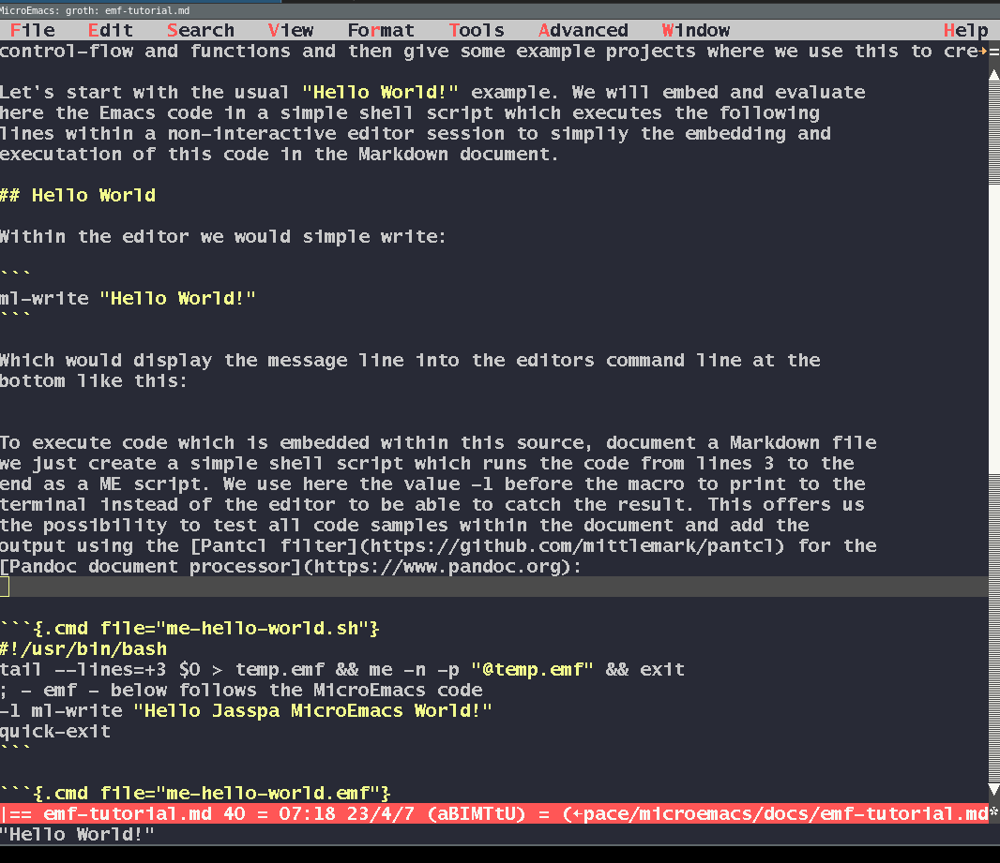

This is a tutorial about the Jasspa MicroEmacs language. We will cover the basic features of the language, variables, data structures, control-flow and functions and then give some example projects where we use this to create some useful extensions.
The examples are written as EMF code blocks. The document build weaves the
Markdown with tmdoc and converts it to HTML with mndoc; it does not execute
the examples. You can try a snippet by selecting it and running
execute-region, or by saving it in a macro file and loading that file.
Within the editor we would simple execute:
ml-write "Hello World!"That the should display the message line into the editors command line at the bottom like this:

You can execute the code by pressing "Esc-x" then writing "ml-write",
pressing the ENTER key and then writing the message "Hello World!".
Alternatively you can write the text in the editor, marking the code line and
an empty line thereafter and then "Esc-x" and write "execute-region".
For more background on the variables have a look at the help page Variables.
Essentially we have:
Variable values were assigned usually with the set-variable command. Here an example:
; make dumping out information easier
define-macro print
-1 ml-write @1
!emacro
print "Hello Print World!"
set-variable %test "This is a test!"
set-variable #g1 "This is a global register variable!"
print %test
print #g1
; some editor variables
print $buffer-bname
print $progname
print $versionEvery code example in this tutorial is in its own script file, so if we would like to use
the print macro in the next code example this would produce an error.
print "test"To use our print macro we will place this macro in our user.emf file which is in our jasspa home directory:
-1 ml-write $user-path
-1 ml-write $user-nameSo as our setting show we simply write the print macro in a file groth.emf.
Thereafter we should be able to use the print function in all code-chunk
examples. For illustrative purposes we place the function in a file
tutorial.emf which we put in our $user-path and which we then just execute
like this at the beginning of our code chunk:
execute-file "tutorial.emf"
print "Hello Tutorial!"Now back to variables ...
Global register variables start with the prefix #g and then a number between
1 and 9. There are used for fast access of variables values which are visible in all code regions:
execute-file "tutorial.emf"
set-variable #g1 "Value of #g1 is a string!"
set-variable #g2 "Another value!"
define-macro test-global
print #g1
!emacro
test-global
print #g2Local variable a prefixed with #l and the values again from 1 to 9.
Here an example:
execute-file "tutorial.emf"
define-macro test-local
set-variable #l1 "Local variable string!"
print #l1
!emacro
test-local
set-variable %test &spr "#l1 is '%s'" #l1
print %testAs you can see the default value for register variables is an empty string.
There are as well register variables with the prefix #p which means that the should be as well visible in the calling macro, so the parent macro.
Here an example:
execute-file "tutorial.emf"
define-macro child-mac
; set a local variable in the caller
set-variable #p1 "Hello parent!"
!emacro
define-macro parent-mac
child-mac
print #l1
!emacro
parent-macThis might be helpful in some situations but might as well complicate a little bit the code understanding.
As told system variables start with a dollar and they keep information about
the editor and some variables which are derived from system variables. You can
display the variables using the macro "list-variables" from within the editor,
so executing esc-x and then writing the command. Or by using the default
key-combination C-h v. Here we just display a few of these variables:
execute-file "tutorial.emf"
print &sprintf "variable: $auto-time = %s" $auto-time
print &sprintf "variable: $buffer-bname = %s" $buffer-bname
print &sprintf "variable: $not-existing = %s" $not-existing
; load a file into MicroEmacs
find-file &cat $user-path "groth.emf"
print &sprintf "variable: $buffer-bname = %s" $buffer-bname
print &sprintf "variable: $buffer-fname = %s" $buffer-fname
; how many lines has this file
end-of-buffer ; jump to the end
print &sprintf "variable: $window-aline = %s" $window-aline
As you can see in the case you try to access a variable that does not exists you get the value "ERROR" as a variable value, that can be used to check if a variable exists. Here an example:
execute-file "tutorial.emf"
set-variable %real-var "hello"
set-variable #l2 %real-var
set-variable #l3 %dummy-var
; check if the variable has the string ERROR &seq == string equal
!if &seq #l2 "ERROR"
print "variable %real-var does not exists!"
!else
print "variable %real-var does exists!"
!endif
!if &seq #l3 "ERROR"
print "variable %dummy-var does not exists!"
!else
print "variable %dummy-var does exists!"
!endifWe have the following data structures in MicroEmacs:
A scalar is just a single value. Per default MicroEmacs has only one more complex data structure, the list, which is just recognized by ME if a variable contains a list of pipe symbols. Here an example:
execute-file "tutorial.emf"
set-variable #l1 "|this|is|a|list|"
print &lget #l1 1
print &lget #l1 2As you can see we can get the element of a list using the &lget
function. To work with lists we have as well the following functions:
&ldel list idx - delete an element of a list&lfind list value - find a position in a list by value&linsert list index value - insert an element at a certain position&lset list index value - set a value of a list at a certain position
execute-file "tutorial.emf"
set-variable #l1 "|this|is|a|list|"
set-variable #l1 &linsert #l1 1 "start"
print &lget #l1 1
print &lget #l1 2Access and modification to lists is quite slow, so it is preferred to store not so large data in a list.
For illustration purpose let's create an other data structure, a dictionary like structure were we can have access using key value pairs. The functions starting with the ampersand sign are created on the C-level. To create functions on the macro level we will create two macros which will handle a dictionary not based on a list but based on data saved in a hidden buffer ":dictDICTNAME:"
execute-file "tutorial.emf"
define-macro dict
set-variable #l1 &spr ":*dict*%s:" @1
set-variable #l2 @2
!force set-variable #l3 @3
!if $status
!if ¬ &exi &ind #l1
set-position "\x82"
find-buffer &mid #l1 1 -1
buffer-mode "hide"
!force goto-position "\x82"
!endif
set-variable &ind &cat #l1 #l2 &set .value #l3
!else
set-variable .value &ind &cat #l1 #l2
!endif
!emacro
define-macro dict-get
set-variable @3 &ind &spr ":*dict*%s:%s" @1 @2
!emacro
; we can now set dictionary values
dict "aa" "Cys" "Cystein"
dict "aa" "Ala" "Alanin"
; and we can retrieve these values later
dict-get "aa" "Cys" #g0
print #g0
dict-get "aa" "Ala" #g0
print #g0We need to give a variable name where we would like to store these values. This code was kindly provided by Steven Phillips as an example for a dictionary implementation. As you can see ME is quite flexible and can be extended creating custom macros. We will discuss this topic later in more detail.
Operators and functions are created on the C-level they can be broadly divided into the type of data they handle:
You find out what functions are available by having a look at the help page of the Macro Language Glossary. To get this help page use the menu entry "Help-General-Help" and then browse to "Macro-Dev".
Here are some examples on how to use the language glossary:
execute-file "tutorial.emf"
set-variable #l0 -12
set-variable #l1 &abs #l0 ; absolute value
print #l0
print #l1
print &add #l1 1 ; add 1
print &div #l1 4 ; divide by four
set-variable #l2 &inc #l1 1 ; increment variable
print #l2Now a few examples for working with strings:
execute-file "tutorial.emf"
set-variable #l0 "Hello Murks"
print &rep #l0 "Murks" "World!" ; replace a string
print &cat &cat "Hello " "World" "!" ; concatenate a string
print &rig "Hello World!" 6 ; right characters
print &lef "Hello World!" 6 ; left characters
print &mid "Hello World!" 6 8 ; middle characters
print &slo "Hello World!" ; lower case
print &sup "Hello World!" ; upper case
print &len "Hello World!" ; length of string
print &trb " Hello World! " ; trim string - remove whitespacesYou can combine these functions in different ways:
execute-file "tutorial.emf"
set-variable #l0 &rep &trb &cat " Hello " "Murks " "Murks" "World!"
print #l0In the example above we concatenate first the strings " Hello" and "Murks "
using the function &cat, then we remove the whitespaces at the beginning
and the end using &trb and thereafter we do the replacement of the the
last two strings. You could translate this like so:
rep(trim(cat(" Hello ", "Murks ")), "Murks", "World!")
MicroEmacs supports UTF-8 natively and keeps the encoding per buffer. It
auto-detects file encodings; use mec -E utf-8 file.txt to force a buffer to
UTF-8 when needed. See UTF-8 Encoding for details.
The traditional string functions such as &len and &mid count bytes. The
&u variants count valid UTF-8 sequences as characters; their positions are
1-based. These functions count encoded characters, not user-perceived
graphemes, so a base letter followed by a combining mark may count as two.
execute-file "tutorial.emf"
set-variable #l0 "αβγ"
print &len #l0 ; 6 bytes in UTF-8
print &ulen #l0 ; 3 characters
print &uleft #l0 2 ; αβ
print &umid #l0 2 1 ; βFirst again let's start with numerical issues:
execute-file "tutorial.emf"
print &equal 3 3 ; equal ? 1 true
print &equal 3 4 ; 0 false
print &greater 4 3 ; greater 4 > 3
print &greater 3 4 ; greater 3 > 4
print &less 3 4 ; less r 3 < 4
Now a few string operators/functions:
execute-file "tutorial.emf"
print &seq "Hello" "World!" ; should return 0 / false
print &seq "Hello" "Hello" ; should return 1 / true
print &seq "HELLO" &sup "Hello" ; should return 1 / true
print &isequal "HELLO" "HeLLo" ; case insensitive comparison
print &isin "HE" "Hello" ; case insensitive check
print &sin "HE" "Hello" ; case sensitive checkThere are as well functions, operators working on strings using regular expressions:
execute-file "tutorial.emf"
print &xse "Hello World!" "H.+!" ; 1 true
print &xse "file.cpp" ".+\\.cp?p?"
print &xse "file.c" ".+\\.cp?p?"
print &xse "file.h" ".+\\.cp?p?" ; 0 falseThese examples should give you an idea how to manipulate numbers and strings using the MicroEmacs macro language.
MicroEmacs has as well the usual control structures:
!if, !elif, !else, !endif!while with !done!repeat with !done or !until!break and !continue
But first let's look at some methods to express current date and time which we might later use for an example where we greet the user:
execute-file "tutorial.emf"
print $time
print &cat "Year: " &mid $time 0 4
print &cat "Month: " &mid $time 7 2
print &sprintf "Month: %02d" &mid $time 7 2 ; leading zero
print &cat "Day: " &mid $time 9 2
print &cat "Wday: " &mid $time 11 1 ; 0=Sum
; lets create a list and extract the three day abbreviations
set-variable %weekdays "|NULL|Sun|Mon|Tue|Wed|Thu|Fri|Sat|"
print &cat "Wday: " &lget %weekdays &mid $time 11 1
print &sprintf "Hour: %02d" &mid $time 12 2
print &sprintf "Min: %02d" &mid $time 14 2 Let us now evaluate what hour it is in the morning and then greet the user with the right choice!
execute-file "tutorial.emf"
set-variable #l0 &mid $time 12 2 ; the current hour
print &sprintf "Current hour is: %02d" #l0
!if &gre #l0 4 &and &less #l0 11 ; from 5 to ten
print "Good Morning!"
!elif &gre #l0 10 &and &less #l0 15
print "Good Day!"
!elif &gre #l0 14 &and &less #l0 18
print "Good Afternoon!"
!elif &gre #l0 17 &and &less #l0 23
print "Good Evening!"
!else
print "Good Night!!"
!endif
print &lget "|01|02|03|04|" 2So an "if" statement starts with the expression !if an "else if" with the
expression !elif and the "else" with the expression !else and if or an
if/elif/else block must be finished with an else. The MicroEmacs editor will
automatically help you by indenting the blocks.
Instead of these complex and conditions we could as well use the &lfind
function which returns 0 if the element is not in the list, here an example
for the code above using this feature. As in the case an element is not in a
list the return value is zero, we can directly use it in an if condition.
execute-file "tutorial.emf"
; the current hour with leading zero if early in the morning
set-variable #l0 &sprintf "%02d" &mid $time 12 2
print #l0
print &lfind "|05|06|07|08|09|10|" #l0 ; checking &lfind
!if &lfind "|05|06|07|08|09|10|" #l0
print "Good Morning!"
!elif &lfind "|11|12|13|14|" #l0
print "Good Day!"
!elif &lfind "|15|16|17|" #l0
print "Good Afternoon!"
!elif &lfind "|18|19|20|21|22|" #l0
print "Good Evening!"
!else
print "Good Night!!"
!endifUsing &lfind might be in some cases easier to read and to understand.
Let's continue with loops. ME provides !while and !repeat, but no
C-style for loop. A counting loop can be written with !while:
execute-file "tutorial.emf"
set-variable #l0 0 ; initialization
!while &less #l0 8 ; condition
set-variable #l0 &inc #l0 1 ; increment
print #l0
!doneTo skip the rest of a loop we have the !continue directive. Let's modify the
example above and only show even numbers. We can do this by using the &mod
function/operator.
execute-file "tutorial.emf"
set-variable #l0 0
!while &less #l0 8
set-variable #l0 &inc #l0 1
!if &mod #l0 2 ; skip odd numbers
!continue
!endif
print #l0
!doneThe !repeat directive has no condition at its start, so use !break to end
it explicitly, or !until to test a condition at the end of each iteration.
Here is an example using !break:
execute-file "tutorial.emf"
set-variable #l0 0
!repeat
set-variable #l0 &inc #l0 1
print #l0
!if &gre #l0 7
!break
!endif
!doneAlternatively, !until checks a condition at the end of each !repeat
iteration:
execute-file "tutorial.emf"
set-variable #l0 0
!repeat
set-variable #l0 &inc #l0 1
print #l0
!until &gre #l0 7Current versions support three levels of !while and !repeat nesting,
including combinations of the two loop types. The following examples each use
two levels and count six iterations:
execute-file "tutorial.emf"
set-variable #l0 0 ; outer loop
set-variable #l2 0 ; total iterations
!while &less #l0 3
set-variable #l0 &inc #l0 1
set-variable #l1 0 ; inner loop
!while &less #l1 2
set-variable #l1 &inc #l1 1
set-variable #l2 &inc #l2 1
!done
!done
print #l2 ; 6The same iteration count can be expressed with nested !repeat loops:
execute-file "tutorial.emf"
set-variable #l0 0 ; outer loop
set-variable #l2 0 ; total iterations
!repeat
set-variable #l0 &inc #l0 1
set-variable #l1 0 ; inner loop
!repeat
set-variable #l1 &inc #l1 1
set-variable #l2 &inc #l2 1
!until &gre #l1 1
!until &gre #l0 2
print #l2 ; 6!goto and !tgoto are also available for jumps to labels; see the
MicroEmacs help pages for their details.
After discussing the basics of programming with ME we continue with creating macros in ME, which are like functions, we should now discuss the following topics
define-macro - define a macro/functiondefine-help - define help for a macro/function
Functions, called as well macros in ME can not return values. However, you can arguments and add as well here variable names and modify these variables as inside of your function. Here an example which squares the submitted value and stores the value in the given variable:
execute-file "tutorial.emf"
define-macro square-value
set-variable @2 &mult @1 @1
!emacro
square-value 5 #l0
print #l0The first argument for a macro is always @1, the second @2 and so on. So,
although we can't return values from macros, we can give references to
variables and store date there.
Macro behavior often is modified by preceeding the macro call with a numeric
argument, -1 ml-write "message string" was an example where the message goes
to the terminal but not to the editor. Let's create a root function:
execute-file "tutorial.emf"
define-macro check-num
!if @?
; numeric argument given
print &sprintf "Given: %d" @#
!else
print "No numeric argument given"
!endif
!emacro
check-num
100 check-num
-5 check-numFor more information consult the MicroEmacs help page on "define-macro".
Let's finish for now with a macro which extracts all header line of this document and places is them with the line number into its own file, toc.txt.
find-file emf-tutorial.md
beginning-of-buffer
-1 ml-write $buffer-bname
; let's now search for lines starting with two hashes
!force search-forward "^##"
!while $status
forward-char
-1 ml-write &sprintf "line: %03d %s" $window-line @wl
!force search-forward "^##"
!doneLet's extend this a little bit so that we write this into a file "toc.txt".
find-file "emf-tutorial.md"
find-file "toc.txt"
beginning-of-buffer
set-mark
end-of-buffer
exchange-point-and-mark
kill-region
find-buffer "emf-tutorial.md"
beginning-of-buffer
; let's now search for lines starting with two hashes
!force search-forward "^##"
!while $status
forward-char
-1 ml-write &sprintf "line: %03d %s" $window-line @wl
set-variable #l0 &sprintf "line: %03d %s\n" $window-line @wl
find-buffer "toc.txt"
insert-string #l0
find-buffer "emf-tutorial.md"
!force search-forward "^##"
!doneAfter understanding a few basic you might like to create your own macros.
First you could add these macros into your USERNAME.emf file which is
usually within your ME home folder. Let's open this file and add a simple
macro which deletes all line with a certain string within these line. You
would like to use this macro every time you have such formats to convert.
Here an example file:
some text
delete me because I am not required
some text with other lines
delete me but with some other text
some text within other linesSo let's create a simple macro to delete all lines within the current buffer
which have the text "delete me" at the beginning of the lines. We start with a
simple message in the macro. Open your USERNAME.emf file and write down the
following text:
define-macro remove-delete-me
1000 ml-write "Macro is here"
!emacroHighlight the three macro lines and execute the command execute-region
(Esc-x execute-region). If you did this you now have a command
remove-delete-me which you can execute by again pressing Esc-x and the
writing remove-delete-me - you can use tab completion, so writing remoTAB
should be sufficient. Afterward you see the message line in your editor.
You can now modify the code, re-mark and again use execute-region to update
the macro code. Let's change the macro try it again out.
define-macro remove-delete-me
1000 ml-write "Macro is here again!!"
!emacroThat way you can stepwise extend the macro. BTW: I did this all here directly
within a Markdown document, so it must be not an EMF file, but the final macro
should be then written then in such an EMF file. Placing the macro into
USERNAME.emf ensures that it is loaded at every ME start.
Here would be the final macro:
define-macro remove-delete-me
; stepwise debugging
set-variable $debug 2
set-alpha-mark "p"
!force search-forward "^delete me"
!while $status
kill-line
!force search-forward "^delete.me"
!done
goto-alpha-mark "p"
1000 ml-write "Macro was executed!!"
set-variable $debug 0
!emacroHere some example text on which we can apply this macro:
hello 1
delete me 1
hello 2
delete me 1We set some debugging variable on top to step through the macro code. This helps us in identifying problems in the code. We will see then that we must jump to the beginning of the line and then the code should work:
define-macro remove-delete-me
set-alpha-mark "p"
!force search-forward "^delete me"
!while $status
beginning-of-line
kill-line ; cleans the line
kill-line ; the then empty line
!force search-forward "^delete.me"
!done
goto-alpha-mark "p"
!emacroPlacing the course above the text which should be manipulated allows us then to remove these lines.
<CURSOR>
hello 1
delete me 1
hello 2
delete me 2After executing remove-delete-me we will then have this output:
<CURSOR>
hello 1
hello 2This was a very simple example, but it shows you how to start writing your own macros. Consult the embedded MicroEmacs help pages (Esc-?) for more information.
BTW: There is as well a macro recorder "Ctrl-x (" to start the recorder and "Ctrl-x )" to end a macro, and "Ctrl-x e" to execute the last recorded macro.
For a formal BNF (Backus-Naur Form) grammar of the EMF macro language, see doc/emf-bnf.md. The grammar specifies the complete syntax including token types, expressions, directives, and block structure.
Key grammar rules:
- Programs are sequences of lines (blank, comment, command, directive, or label)
- Every line is self-contained (no line continuation with \)
- Prefix notation: functions appear before arguments (&add 1 2)
- All values are strings; numeric conversion happens automatically
- Comments start with ; and extend to end of line
- Labels start with * at beginning of line
Build the tutorial HTML from this Markdown source with make in the docs
directory. The Makefile runs tmdoc in weave mode and then uses mndoc to
produce the HTML. EMF code blocks use standard Markdown fences and are not
executed as part of this build.
cd docs
make